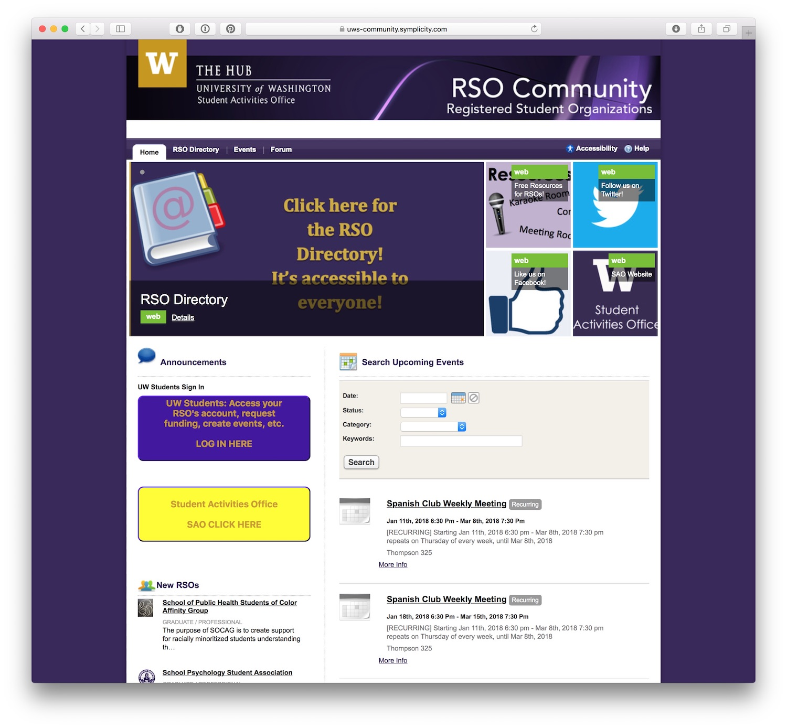
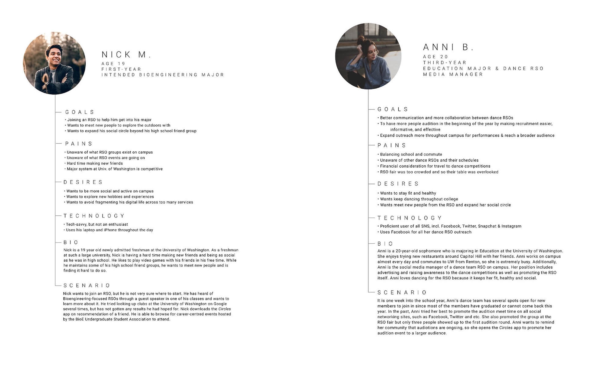
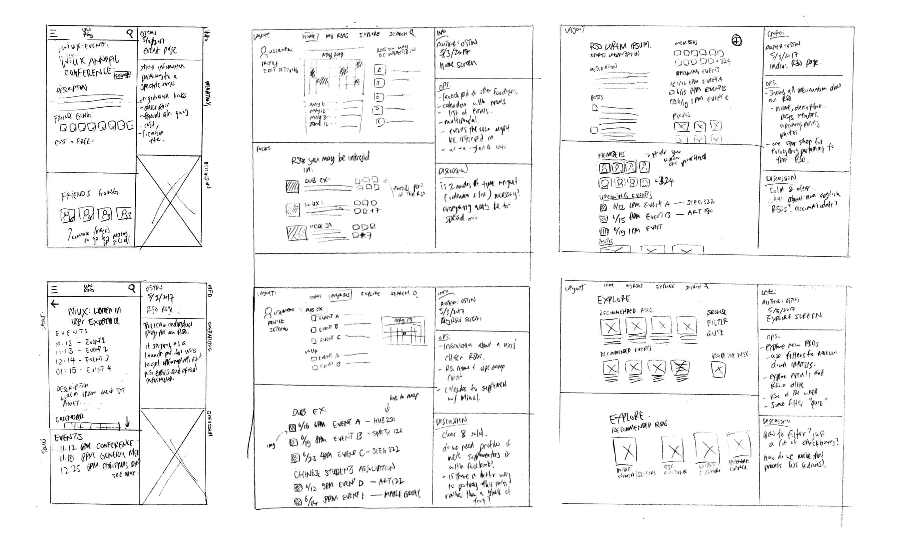
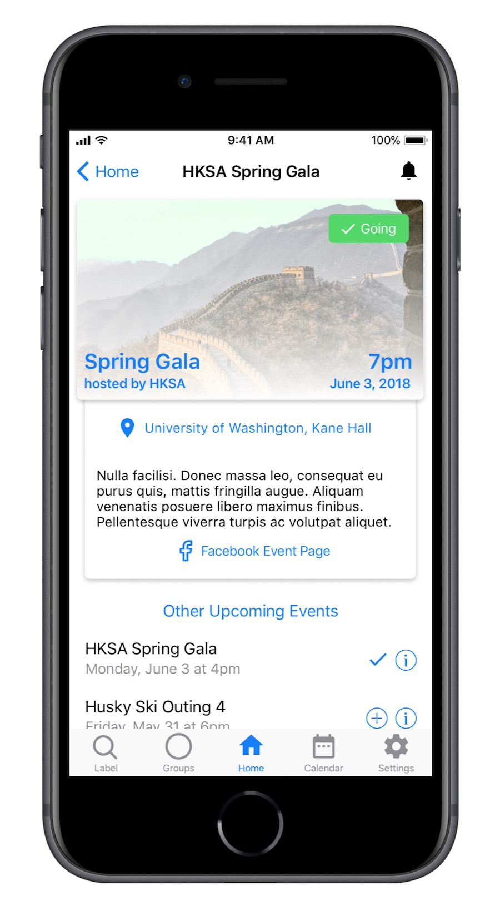

There is a lack of communication between the RSOs (Registered Student Organisations) on the UW campus and the students. Due to the sheer number of RSOs available and existing information fragmented across multiple services, interested students find it difficult to find RSOs or events that pertain to their interests. For similar reasons, RSOs also find it difficult to conduct effective outreach for their events and communities.

The current RSO resource page. It is infrequently updated, desktop-access only, and is not used in lieu of services like Facebook Pages
We conducted six semi-structured user interviews with members of both the RSO audience and the RSO leaders themselves. We identified the pain points that these two groups had experienced and came up with a number of design requirements:
1. Being able to narrow down RSOs and RSO events with filters
2. The ability to RSVP to an event
3. The ability for users to receive notifications/reminders about selected events
4. Allow users to see what Events and RSOs are currently Trending
5. Ability to sync to other calendars
6. A calendar for users to visualize upcoming events
With information from our interviews, we created two personas, Nick M and Anni B. They both represent our two user groups and describe the common pain points and goals. They also include information on the users’ background and how tech savvy they are. Provisional personas were initially created, critiqued, and refined to create two realistic and detailed personas that embody our target users. With a strong idea of our users and focused goals, it helped us figure out the design requirements and well as a clear path for our IA. These refined personas thus act as a guide through the rest of the design process, keeping us grounded in the reality of our users and thus inform our designs to the benefit of our users.

Two personas we developed to capture user motives and drives.
We explored different screen styles, different delivery methods (desktop access vs. mobile access), and different information priorities. We chose to use a mobile app that used Facebook logins with connected UW IDs to facilitate the connection rather than creating an entirely new "social network" that would just increase service fragmentation. Below are my sketches of potential solutions, in both web and mobile formats. We decided to go with a mobile application because it would be the primary device when on-the-go and going to events.

A sample of my ideation sketches!
Our storyboards helped demonstrate the real world implications of our application and gave context to the different scenarios we developed in previous steps. In addition, it was useful because it enabled us to consider how users will navigate throughout the application and what actions will come from a specific interaction. In doing so, our storyboard supplemented our created information architectures and final artefacts. Below is one of the storyboards I designed! (excuse my drawing skills)

A storyboard I developed to capture a specific user motivation to use the application.
We developed the information architecture – the structure of this information resource – to ensure that our application was laid out logically and provided alternate decision paths. We decided to have seven core pages:
- Home Page
- Individual RSO Page
- Individual Event Page
- Discover page
- Search page
- My RSOs page
- Settings page
The flow diagram shown below outlines both the information architecture and primary user flows.

Our information architecture.
We developed a basic paper prototype based on our information architecture and conducted informal user testing with our low-fidelity prototype. We created three tasks for users to complete, and asked them to voice their thought process as they completed the task with the paper prototypes. We then iterated on our prototype based on the feedback we received and the pain points and confusion identified. Below is a rough overview of some of the screens we outlined.

Some sample paper wireframes developed by all members of the team
The three tasks we asked our testers to complete were:
1. Finding the Location of an Event
2. Subscribing to RSO Notifications and Updates through an Event
3. Editing the Description of a Specific RSO Page
We outlined these tasks in a number of user task flows, shown below. For a more in-depth look into these user flows (with some alternate and error states), click here.

Three key user flows, outlined with motives.
We reached out to the people who we did our initial user research on in order to get the most relevant feedback. By conducting these usability tests, we were able to identify strengths and pain points throughout our proposed application. We identified a number of improvements, the most notable being:
1: Inconsistent references to “My RSOs” vs “My Circles”
In the “Individual RSO” pages, users clicked the “+Add to Circles” button but were confused to where that RSO would be added to within the application. While this button would add the RSO to their “My RSOs” page, users found this unintuitive, citing that “If it’s adding to “My Circles” there should be a “My Circles” page instead of a “My RSOs” page”. To mitigate this, we plan to change the “My RSOs” button in the Navigation bar to a “My Circles” button, and change the iconography from a simplistic drawing of a group of humans to a set of circles.
2. Alternate approach to “Changing Interests”
When asked to “Edit their interests”, one participant immediately went to the Search page instead of the Settings page to change their interests. When asked why they checked the Search page first, the participant said that “I thought it would be a filter setting in the Search page”. From this, an alternate pathway to get to the “Edit your interests” settings page could be inserted within the Search page to facilitate a more intuitive interaction.
3. Maps Page
When asked to find the location of an event from the home screen, all participants were able to navigate through the UI quickly and accurately. However, one participant pointed out that on the Maps screen, that while they were able to get the map location of the building, they were unable to see any specific details about that location on the map without having to go back to the previous page and flip back and forth between the Event page and the Map.
Wireframes of the whole app, designed on top of our research, testing, and initial paper prototype, were created to allow for more interactive user testing. These would function as a basis for continued iterative design as we identified pain points in onboarding, key user task flows, discoverability, and so on.

A set of our digital wireframes.

Linking together all the buttons and interactions in Adobe XD
An interactive wireframe was developed to identify pain points in key user task flows and iron them out. An example of an initial stage for our interactive wireframe is displayed below (it's functional!).
Using the iterative feedback gained from our interactive user testing, mocks of several key pages were developed. We found the biggest hurdles for our user task flows to be the specific language that was used when labelling things such as buttons as well as status feedback symbols, like the "checkmark" used to indicate that a user is going to event needed to be double encoded (colour & symbols).

Our high-fidelity mockups!
Using the iterative feedback gained from our interactive user testing, mocks of several key pages were developed. We found the biggest hurdles for our user task flows to be the specific language that was used when labelling things such as buttons as well as status feedback symbols, like the "checkmark" used to indicate that a user is going to event needed to be double encoded (colour & symbols).
We chose to use Facebook + UW NetID as our primary way of logging in into the application. This was done to prevent the app from becoming "yet another" social media app– we wanted it to do what it needed to do, and nothing more. However, requiring Facebook as the social "backbone" does exclude people who choose not to use Facebook. In doing so, this application fails to address the needs of those users. To rectify this, a Facebook-supplemented "friends" functionality could be integrated where users could add other users as "friends" (Facebook friends would be automatically added) so they can enjoy the social functionality as well.
While we have specifically designed this application around the UW student experience, I can see this being used in other universities and high schools around the country. Increasing the scope of this application to allow it to be used in different environment would both challenge us and increase the app's viability as a business.
I came back to this project on my own, nearly a year after we built this the first time. Taking what I "would do next time" and my own personal development on mobile application design, I re-designed it to better match Apple iOS' Human Interface Guidelines as well as serve the needs of RSOs better. Some things that I addressed in this revised design:
-
The removal of the "Circles" moniker as a metaphor for "Groups", which we used for branding's sake. Other than the name of the application, all instances of "RSOs" and "Groups" are replaced with "Groups". This also increases the scope of the application, so it can be used in contexts outside of the University of Washington
-
Increased legibility by keeping the typefaces adhered to the Human Interface Guidelines from Apple.
-
Removal of the UW colours, in lieu for a clear iOS-focused colour palette. The blue colour exclusively signifies some sort of interaction
-
Shift to a card and text-based layout to improve informational hierarchy and prioritisation.

Individual event page
Interaction: Scrolling through the carousel of student groups and navigating to a student group page
Navigating to an individual event page